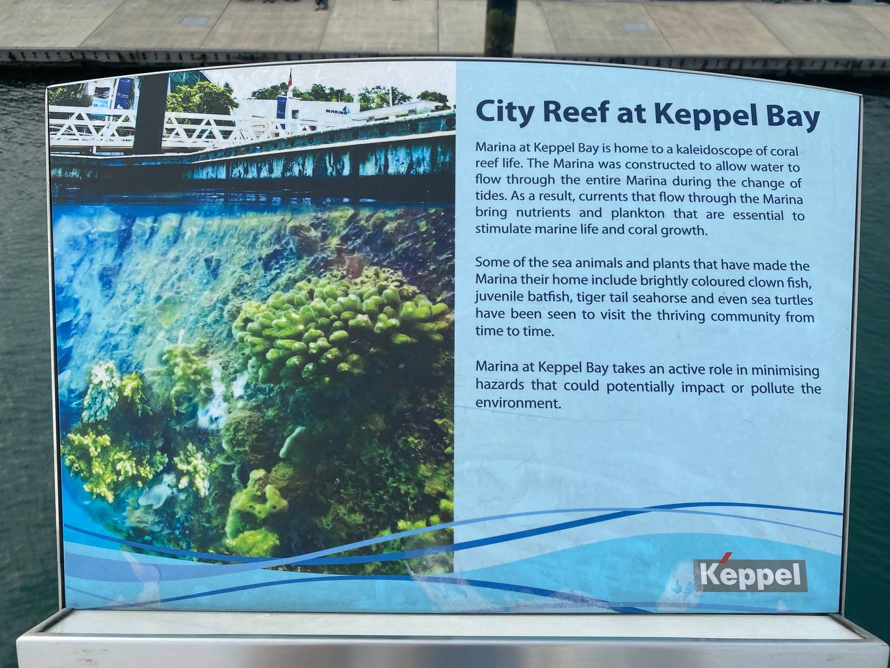

SMU School of Computing and Information Systems
Year 4
Bachelor of Science (Information Systems) | Track: Business Analytics & Digitalisation and Cloud Solutions
Masters of Science in Computing | Track: Software & Cyber-Physical Systems Track | Local Fast Track Scholarship
Year 1 Semester 1 (Aug 2020 - Dec 2020) (fully online)
5 mods, all preassigned :')
COR3001 Big Questions
Philosophical mod, wondering about questions pertaining Local vs
Global ( Cosmopolitanism :) )
Nationalism vs Cosmopolitanism
Socrates; Diogenes (Cynic philosopher believing in true carefree
"cosmopolitan" society without any obligations and rules)
Many interesting thought-provoking beliefs; Stoics like Roman
Emperor Marcus Aurelius believe in cosmopolitanism whereby one
should be critical and focus on self rather than critical of
others;
Altruism; Americanisation (influence of American culture and
business on other countries outside America); Multi-racialism;
Macdonaldization (worldwide homogenization of cultures due to
globalization)
Local sense of belonging may be threatened like erosion of less
popular languages (like Dialects) as our society becomes more
global
Overall many interesting thoughts which I thoroughly enjoyed
pondering, though not really IT / Business related hehe :')
COR2100 Economics and Society
Understanding certain fundamental economics in the Society
Types of market; Perfect Competition; Monopolistic Competition;
Oligopoly; Monopoly
Price elasticity; Positive / Negative Externalities; Deadweight
Losses; Government Intervention; Opportunity Cost; Economic vs
Accounting Profit
IS110 Information Systems and Innovation
Wide overview of Information Systems with many case studies
Facilitate a class on assigned case study (mine was about DDOS
attack and how to prevent, prepare and handle)
Information Systems terms like Cloud Computing; SaaS, PaaS, IaaS;
Business workflows; Net Present Value (NPV) of system investment
calculation
ERP systems and how it has empowered businesses like healthcare
providers, better storage compared to many physical files; Big
Bang approach vs phased approach in implementing Information
Systems;
IS111 Introduction to Programming
Python coding! :))
Jupyter Notebook; Visual Studio Code
Programming concepts like output, variables, functions, Boolean
Evaluation, For/While loops, Dictionaries, File I/O; programmatic
approach to problems;
Structured Query Language (SQL), Entity-Relational Models, mySQL
Entity-Relational Database; Entities; Primary Keys and more...;
Transitive Dependency...
COR1301 Leadership and Team Building (SMU-X)
Collaborated with LDR Pte Ltd to promote local tourism app
Locomole
Many Leadership theories; Self-Managed Teams; Leadership
Contingency Theory;
Many types of leaders; Adapt to many different situations (People;
Leader; Situation); Digital Leadership;
IS113 Web Application Development 1
PHP
WAMP server: Windows Apache MySQL PHP;
Year 2 Semester 1 (Aug 2021 - Dec 2021) (fully online)
5 mods, 5 projects, 5 finals, + TA commitments :'(
IS210 Business Process Analysis & Solutioning
Business Process Analysis including: Resource model, Collaboration
model, Workflow Model, Root Cause Impact Model, Root Cause
Recommendation Model, Application Model, Function Model, Use Case
Models, Solution Overview Model, ...
Signavio Academic Business Process Management Tools
IS211 Interaction Design and Prototyping
User Interface / User Experience Design Module
User Empathy Notes
Nielson's 10 Usability Heuristics
Figma Prototyping Tool
"Maze" Prototype Testing Site
AB Testing
Evaluating test results; Wilcoxen-signed ranked test, paired
sample t-test
COR-STAT1202 Introductory Statistics
Statistics
Binomial, Normal, Poisson, Exponential Distribution
Evaluating Normality, Kurtosis, Skewness
Hypothesis testings
COR1305 Spreadsheet Modeling and Analytics
Excel, Excel Macro
Monte Carlo Simulations
Index Match, Conditional Formatting, Queue simulations
Data Visualization
PivotTables, PivotCharts
Cell Fixing
IS216 Web Application Development 2
JavaScript
Website Team Project "Boredttles", a web application aiming to
connect people globally in this pandemic, like penpal with people
writing messages in a bottle.
made me explore Leaflet.js, Google Firebase, Google Reverse
Geo-coding API, Telegram Bot API invoked with HTTP Get request
JavaScript; Vue.JS; DOM Manipulation; Bootstrap; CSS; GitHub
collaboration;
(TA) IS111 Introduction to Programming
Lab Submissions review; Lab Test Invigilation; Listen to students
and give advice and explanation on why code is wrong.
made some python scripts to check Padlet submission
also made python script to key in test inputs as I test students'
codes
Linear Regression; Multi-collinearity; predict car prices based on
multiple independent variables like Origin, ManufacturingYear,
HorsePower, CarType...
IS215 Digital Business - Technologies and Transformation
Digitisation, Digitalisation, Digital Transformation
Study modern digital transformations case studies, like Swee Choon
using GeoSpatial Data Analytics to derive business insights like
where to set up store
Omnichannel experiences, fusion of digital and physical
experiences in a digital business; Case Study Alibaba's new retail
concept: Hema Fresh
Failed digital transformation case study: Nike+ SportsBand; failed
partnerships and failure to understand wearable accessories market
Understand digitalisation's potential benefits and risks, and not
just simply applying digitalisation for the sake of being
tech-savy at the cost of tarnishing business value; For example
expensive IoT-enabled fruit blender which only works with
expensive fruit packets and internet-access, incurring redundant
hassle and costs.
Class facilitation as a group on assigned topic of Digital Nation:
Sweden
Michael Porter's five forces analysis of market attractiveness
IS213 Enterprise Solution Development
Monolithic vs Microservices architecture
Complex Microservices to orchestrate communication with multiple
microservices
Python Flask
Docker Containerisation; Docker Compose for automation of multiple
container running
RESTful APIs
Advanced Message Queuing Protocol with RabbitMQ as broker to allow
for Asynchronous communication between microservices; Direct,
Topic, Fanout exchanges
Load balancing; understainding Invocation-based and
Messaging-based communication and which to use
API Gateway: KONG
IS214 Enterprise Solution Management
Management; IT Support team
Managing is important, it is said that for every year of IT
solution development, 10 years of IT support is needed.
JIRA ticketing
Monitoring of IT services
Incident management
Communication with stakeholders; Reports like monitoring report
and incident report;
Service Level Agreements (SLAs); have to be SMART (Specific,
Measurable, Achievable, Relevant, Timely)
(TA) Introduction to Programming
Second Semester of IS111 TA
Improved Padlet checking script to better integrate with
spreadsheet; just copy and paste output
Year 3 Semester 1 (Aug 2022 - Nov 2022) (physical classes)
4 mods
IS424 Data Mining and Business Analytics
To gain new information that is useful which was previously unknown.
Why EDA and data pre-processing?
To understand data better through visualisation.
To understand which types of algorithms to utilise.
To solve data quality problems.
Dimensionality reduction to solve Curse of Dimensionality; Sparsity of data increases as number of dimensions increases;
Python Data Analytics; Sci-kit learn;
learn;
Naive Bayes probability classification; Independence assumption;
SMU-X project; java spring backend with Postgresql; react frontend;
Quizzes, Lab test, Certification
IS212 Software Project Management
Agile software development; Study of how traditional methods are not suitable for ever-changing requirements of software development
Different development processes: Waterfall; RUP; Spiral; Scrum; Kanban board; Extreme programming;
Focus on Scrum process which was used in our project
Product backlog; Daily standup; User stories; Sprints; Sprint planning; Sprint review and retrospective;
Developed software with Scrum process
Learning Journey Planning System project; Python Flask backend with MySql; Vue.js frontend; Github Actions for CI pipeline;
3 sprints of fixed-length of 2 weeks. Used JIRA for product and sprint backlog and board.
User Story with estimation and prioritisation; Burnup / Burndown chart; Velocity; Sprint planning, Pair programming, daily standup, sprint review and retrospective,
How Science, Technology, Engineering, Manufacturing (STEM) evolve and change our way of living over the years around the world.
Many interesting discoveries and inventions that we take for granted. Impacts of these discoveries are also studied. Discoveries like Cyclosporin which revolutionised organ transplants, the metric system, old clocks that are decimal time which was base 10,
"Ordinary citizens today live better than kings of the past." was an interesting insight that prof mentioned. It is interesting to wonder how our lives are much better with modern technologies and infrastructure.
LJ5001 Japanese Language Level 1 (3 AUs)
Hiragana, Katakana, Kanji
Quizzes, Oral Tests, Written Tests, Listening Comprehension
はじめまして。わたしは アダム です。どうぞ よろしく おねがいします。
ES0001 The Physical Environments of Singapore (3 AUs)
A module with Asian School of the Environment (ASE) :)
Very interesting. I learn a lot even though it may be overwhelming as it's outside my field of study.
Igneous Rocks, Gombak Gabbro, El-nino La-nina, Indian Ocean Dipole, Wilson cycle, Primary and Secondary Forests, Pioneer Species, Agricultural crops; Coastal Forests; Mangrove species; Sonneratia, Avicennia, Rhizophora, Bruguiera; and many more...
Field trips every week:
1. Little Guilin (Granite Quarry)
2. Shenton Way
3. Labrador Park (heavy rained and we stopped halfway)
4. Meteorological Service Singapore at Changi Airport
5. Telok Blangah Hill Park n Henderson Waves
6. Botanic Gardens
7. Windsor Nature Park
8. Sungei Buloh Wetland Reserve
9. Toa Payoa Town Centre
10. Snorkelling at Keppel Bay (water was v salty)

Year 4 Semester 1 (Aug 2023 - Nov 2023)
Work Study Internship with Accenture (2 CUs), + 2 mods
COR3301 Ethics and Social Responsibility
Premise, Syllogistic reasoning, Normative, Trolley problem: divert train to 1 person instead of 5 people?, Kohlberg's stages of moral development


 best viewed on computer with Google Chrome
best viewed on computer with Google Chrome